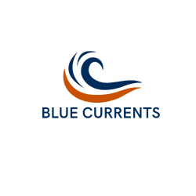

Overview
Purpose
Our white water rafting business is dedicated to providing safe, sustainable, and customer-focused outdoor adventure experiences. The purpose of the website is to showcase our unique offerings and expertise, while providing customers with essential information about our safety measures, equipment, and booking options. Our website should serve as a valuable resource for both novice and experienced rafters,providing helpful tips, frequently asked questions, and other resources to enhance their overall experience with our business.
Audience
Our target audience for the white water rafting company website is individuals and groups who are seeking an exciting and unique outdoor adventure experience. Our customers are typically between the ages of 18-45, with a median income level of $50,000 to $100,000 per year. They are outdoor enthusiasts who are interested in exploring natural environments and seeking thrilling experiences. They value safety, environmental responsibility, and exceptional customer service.
Our customers are looking for an adventure that is both exhilarating and safe, and they want to be assured that they are in the hands of experienced and knowledgeable guides. They also value the opportunity to learn about the natural environments they are exploring and want to feel that they are contributing to the preservation of those environments. Our audience will typically access our site through a mix of desktop and mobile devices, with an emphasis on mobile access for on-the-go bookings and information.
Overall, our website will be designed to target our audience with engaging and informative content that showcases our unique offerings, highlights our commitment to safety and environmental stewardship, and provides easy access to booking information and resources. The website should be visually appealing, easy to navigate, and optimized for both desktop and mobile use.
Branding
Website Logo
Style Guide
Color Palette
Palette URL:
https://coolors.co/011e3d-c85103-ebebeb-ffffff| Primary | Secondary | Accent 1 | Accent 2 |
|---|---|---|---|
| #011e3d | #c85103 | #ebebeb | #ffffff |
Typography
Heading Font: Playfair display
Paragraph Font: Montserrat
Normal paragraph example
The best Whitewater Rafting in Colorado, White Water Rafting Company offers rafting on the Colorado and Roaring Fork Rivers in Glenwood Springs. Since 1974, we have been family owned and operated, rafting the Shoshone section of Glenwood Canyon and beyond.
Colored paragraph example
Trips vary from mild and great for families, to trips exclusively for physically fit and experienced rafters. No matter what type of river adventures you are seeking, White Water Rafting Company can make it happen for you.
Navigation
Site Map
Wireframes
Home